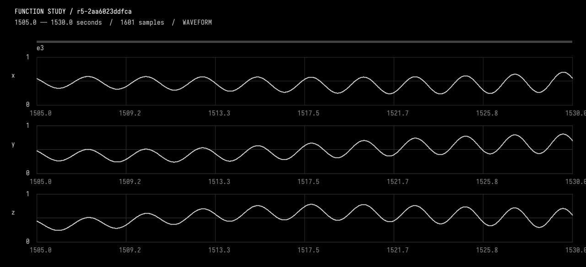
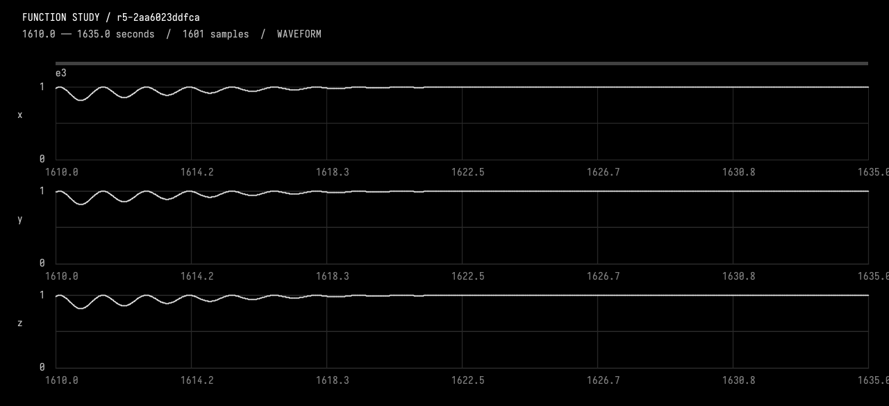
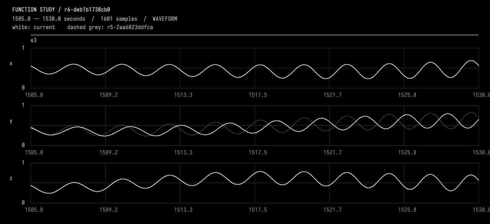
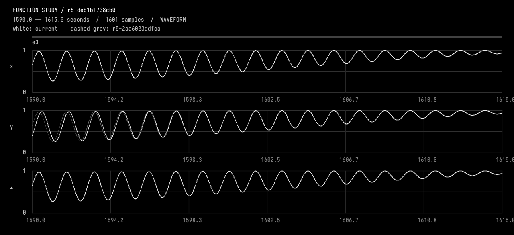
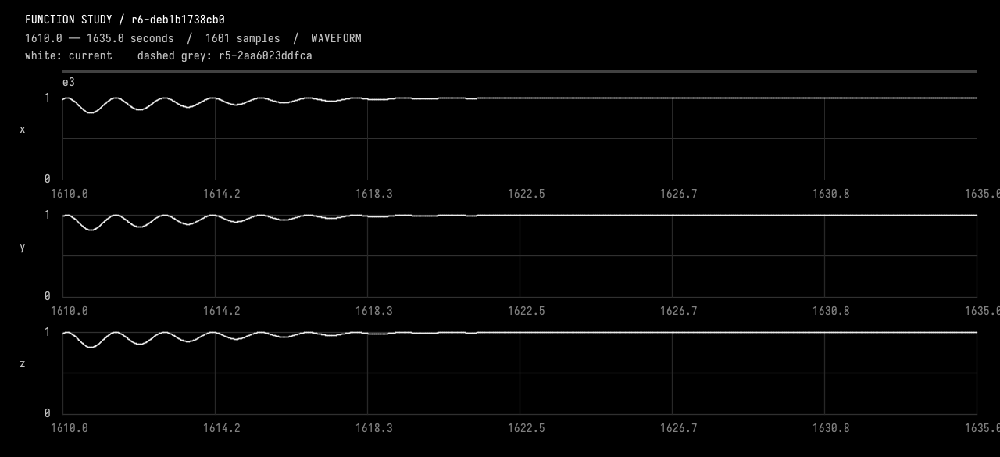

Let one channel fall behind
The original exchange, including tool results and plot images. Expand tool activity to inspect the steps; open a plot to see it full size.
We are resuming the saved function experiment after a runtime restart. The previous attempt was interrupted; neither failed candidate was activated. Working revision is r5-2aa6023ddfca; e3 is the intended event. Read guides/working.md and inspect current state. The CodeUse diagnostic stall is repaired. We identified a Wither compiler-plugin pitfall: a call to a LOCAL function as the last statement of a brace block can produce has no callableId. Verified workaround: use val result = shoulder(base, localAge, event.rise) followed by result instead of ending that branch with the bare call. Do not change the compiler/plugin. Use the existing function study tools and actual observations; write the candidate yourself.
Let the second dimension lag during that event, then catch up smoothly. Keep the other two channels exactly as they are, keep the 30-second shared all-ones hold, and preserve everything outside e3. Use a smooth, monotonic local-time lag during its rise which returns to zero lag with matching endpoint slopes before the hold; choose and state a modest peak lag. Treat this as an instance-specific override, not a change to all events. Inspect before editing. Use CompareFunctionStudy with only y allowed inside e3, inspect before/after local waveform pixels and the plateau join, and report the actual timing policy and measured preservation.
Tool activity · 49 steps
Starting AI conversation
Preparing context and tools.
Planning tool use
Next tool:
DocumentGuideReadRequestUsing DocumentGuideReadRequest
{ "lineCount": 250, "path": "guides/working.md", "startLine": 1 }DocumentGuideReadRequest finished
Read guides/working.md lines 1–92
Planning tool use
Next tool:
InspectFunctionStudyUsing InspectFunctionStudy
{ "revision": "" }InspectFunctionStudy finished
r5-2aa6023ddfca parent, description, durationSeconds, channels, events, choices, source, liveSourceHash, dirty, selectedIds, selectionSeconds, history, semantics images=0
Planning tool use
Next tool:
SelectFunctionStudyUsing SelectFunctionStudy
{ "endSeconds": 1755, "eventIds": [ "e3" ], "startSeconds": 1425 }SelectFunctionStudy finished
r5-2aa6023ddfca parent, description, durationSeconds, channels, events, choices, source, liveSourceHash, dirty, selectedIds, selectionSeconds, history, semantics images=0
Planning tool use
Next tool:
ObserveFunctionStudyUsing ObserveFunctionStudy
{ "compareTo": "", "endSeconds": 1530, "revision": "r5-2aa6023ddfca", "startSeconds": 1505 }ObserveFunctionStudy finished
r5-2aa6023ddfca intervalSeconds, comparedTo, sourceHash, channels, events, choices, selectedIds, sampling, extrema, holdChecks, joins, difference, imageFile, guarantees, localPeaks images=1
Planning tool use
Next tool:
ObserveFunctionStudyUsing ObserveFunctionStudy
{ "compareTo": "", "endSeconds": 1635, "revision": "r5-2aa6023ddfca", "startSeconds": 1610 }ObserveFunctionStudy finished
r5-2aa6023ddfca intervalSeconds, comparedTo, sourceHash, channels, events, choices, selectedIds, sampling, extrema, holdChecks, joins, difference, imageFile, guarantees, localPeaks images=1
Planning tool use
Next tool:
EditFunctionStudyUsing EditFunctionStudy
{"description":"Instance-specific e3 y shoulder-clock lag: C2 bump peaking at 6 seconds, strictly advancing local time, recovered at 1605 before unchanged shared hold; preserve x/z and all other times.","expectedRevision":"r5-2aa6023ddfca","expectedSourceHash":"2aa6023ddfca13fa20c7c678abd282b93b2ccd10d9a1b68f6ac789a127ef91de","source":"import afield.stdlib.Functions\nimport afield.stdlib.StudyComposition\nimport afield.stdlib.StudyEvent\nimport afield.stdlib.StudyChoice\nimport kotlin.math.PI\n\nwith(Functions) {\n val durationSeconds = 3600.0\n val carrierPeriodSeconds = 40.0\n val relativePhasePeriodSeconds = 100.0\n val phaseExcursionRadians = 2.0 * PI / 3.0\n val backgroun...
EditFunctionStudy finished
r6-deb1b1738cb0 Compiled, checked and activated images=0
Planning tool use
Next tool:
CompileKotlinRequestUsing CompileKotlinRequest
{ "file": "afield://function_conversation/function_source/code", "runSetupBlocks": false, "source": "" }CompileKotlinRequest finished
success=true diagnostics=0 setupChanges=0
Planning tool use
Next tool:
CompareFunctionStudyUsing CompareFunctionStudy
{ "afterRevision": "r6-deb1b1738cb0", "allowedChannels": [ "y" ], "beforeRevision": "r5-2aa6023ddfca", "changedEndSeconds": 1755, "changedStartSeconds": 1425 }CompareFunctionStudy finished
r6-deb1b1738cb0 before, allowedIntervalSeconds, allowedChannels, preservedScope, changedEventIds, method images=0
Planning tool use
Next tool:
ObserveFunctionStudyUsing ObserveFunctionStudy
{ "compareTo": "r5-2aa6023ddfca", "endSeconds": 1530, "revision": "r6-deb1b1738cb0", "startSeconds": 1505 }ObserveFunctionStudy finished
r6-deb1b1738cb0 intervalSeconds, comparedTo, sourceHash, channels, events, choices, selectedIds, sampling, extrema, holdChecks, joins, difference, imageFile, guarantees, localPeaks images=1
Planning tool use
Next tool:
ObserveFunctionStudyUsing ObserveFunctionStudy
{ "compareTo": "r5-2aa6023ddfca", "endSeconds": 1615, "revision": "r6-deb1b1738cb0", "startSeconds": 1590 }ObserveFunctionStudy finished
r6-deb1b1738cb0 intervalSeconds, comparedTo, sourceHash, channels, events, choices, selectedIds, sampling, extrema, holdChecks, joins, difference, imageFile, guarantees, localPeaks images=1
Planning tool use
Next tool:
ObserveFunctionStudyUsing ObserveFunctionStudy
{ "compareTo": "r5-2aa6023ddfca", "endSeconds": 1635, "revision": "r6-deb1b1738cb0", "startSeconds": 1610 }ObserveFunctionStudy finished
r6-deb1b1738cb0 intervalSeconds, comparedTo, sourceHash, channels, events, choices, selectedIds, sampling, extrema, holdChecks, joins, difference, imageFile, guarantees, localPeaks images=1
Planning tool use
Next tool:
CompareFunctionStudyUsing CompareFunctionStudy
{ "afterRevision": "r6-deb1b1738cb0", "allowedChannels": [ "y" ], "beforeRevision": "r5-2aa6023ddfca", "changedEndSeconds": 1605, "changedStartSeconds": 1425 }CompareFunctionStudy finished
r6-deb1b1738cb0 before, allowedIntervalSeconds, allowedChannels, preservedScope, changedEventIds, method images=0
Planning tool use
Next tool:
DocumentGuideAppendRequestUsing DocumentGuideAppendRequest
{"path":"guides/working.md","revision":"10694df3cd888ee8ef1985f132d55407f4b059ee97a644dad236303b314ac329","text":"\n## Resumed experiment: e3 y lag (activated)\n\n- Restart inspection confirmed clean r5-2aa6023ddfca; selected e3, support 1425..1755 s, rise 200 s, shared hold 1625..1655 s. New working revision: r6-deb1b1738cb0, parent r5.\n- Instance-specific override only for e3/y: shoulder age
a - L, whereL = 6*64*u^3*(1-u)^3,u=a/180, for age 0..180 s; identity thereafter. Peak local-clock lag 6 s at absolute time 1515; zero lag by 1605, 20 s before hold. Local clock is strictly increasing: analytic rate bounds approximately 0.8855..1.1145, endpoint rate 1 and curvature 0. Lag i...DocumentGuideAppendRequest finished
Guide changed or already exists. Read guides/working.md again and reconcile; nothing was overwritten.
Planning tool use
Next tool:
DocumentGuideReadRequestUsing DocumentGuideReadRequest
{ "lineCount": 200, "path": "guides/working.md", "startLine": 85 }DocumentGuideReadRequest finished
Read guides/working.md lines 85–98
Planning tool use
Next tool:
DocumentGuideReadRequestUsing DocumentGuideReadRequest
{ "lineCount": 100, "path": "guides/working.md", "startLine": 1 }DocumentGuideReadRequest finished
Read guides/working.md lines 1–98
Planning tool use
Next tool:
DocumentGuideAppendRequestUsing DocumentGuideAppendRequest
{"path":"guides/working.md","revision":"5765f50f427d1caea99704e3075839818a5f72329cb89fe9f60dbac9a5db380a","text":"\n## Resumed experiment: e3 y lag (activated)\n\n- Restart inspection confirmed clean r5-2aa6023ddfca; selected e3. New working revision: r6-deb1b1738cb0, parent r5. Event metadata unchanged: e3 support 1425..1755 s, rise 200 s, shared hold 1625..1655 s.\n- Instance-specific e3/y shoulder age is
a - L, withL = 6*64*u^3*(1-u)^3,u=a/180, for age 0..180 s; identity thereafter. Peak local-clock lag 6 s at absolute time 1515; recovered by 1605, 20 s before hold. Analytic clock-rate bounds approximately 0.8855..1.1145, endpoint rate 1 and curvature 0: local time strictly ad...DocumentGuideAppendRequest finished
Saved guides/working.md





Activated r6-deb1b1738cb0, changing only e3’s y rise.
Timing policy
- Peak local-time lag: 6 seconds at 1515 s.
- Lag follows (6\cdot64u^3(1-u)^3), with (u=(t-1425)/180).
- The local clock always advances: its rate stays approximately 0.8855–1.1145.
- Fully caught up at 1605 s, with matching slope and curvature—20 seconds before the unchanged 1625–1655 s shared all-ones hold.
- Only the pulse phase and shoulder envelopes use delayed time; the background continues on absolute time.
Verification
- Kotlin compiled successfully using the local-result workaround; no compiler/plugin changes.
- Inspected before/after waveform pixels, catch-up, and the plateau join.
- Whole-hour comparisons at ≤20 ms spacing plus event joins measured zero maximum and RMS error for:
- x and z everywhere
- y outside e3
- Additionally, y outside the tighter 1425–1605 s interval, preserving the recovered rise, hold, and fall.
- Hold target error was 0; plateau-entry slope was numerically zero (~(5.6\times10^{-12})).
These are sampled measurements, supported by the instance-specific source restriction. Saved the timing policy and evidence in working notes.